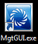
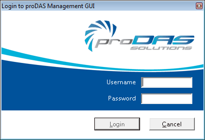
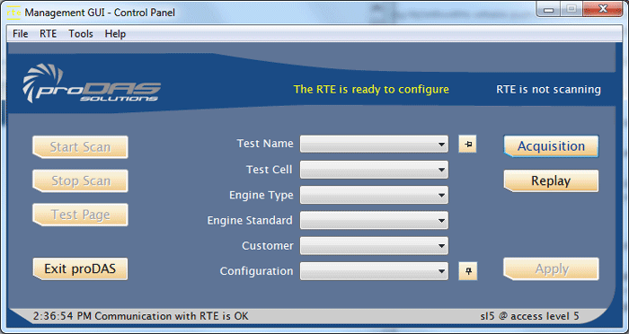

How To – Start the proDAS Management GUI Application
This How To provides the steps required to start the proDAS Management GUI application on the Management GUI Computer.
To Start the proDAS Management GUI Application
- If you are not logged in, login as engineer.
- Double-click the Management GUI icon .
The proDAS Management GUI login window is displayed.

- Enter the user name in the Username field.
- Enter the user password in the Password field.
The password is case sensitive.
- Click Login.
The proDAS Management GUI application and the Unified Event Log (UEL) are started.
The proDAS Management GUI Control Panel is displayed.
